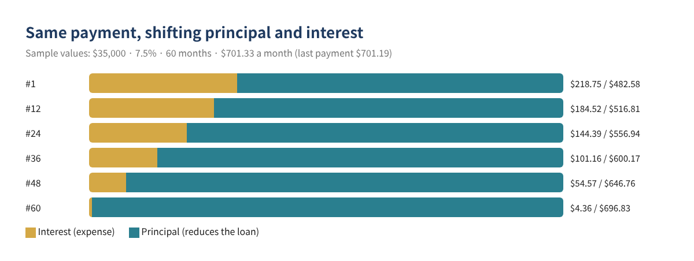
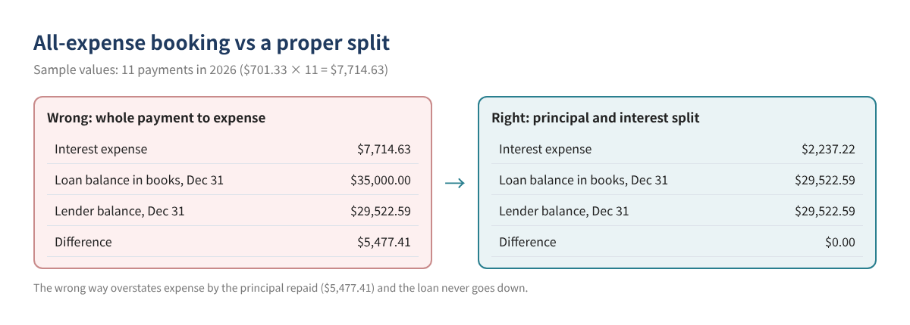
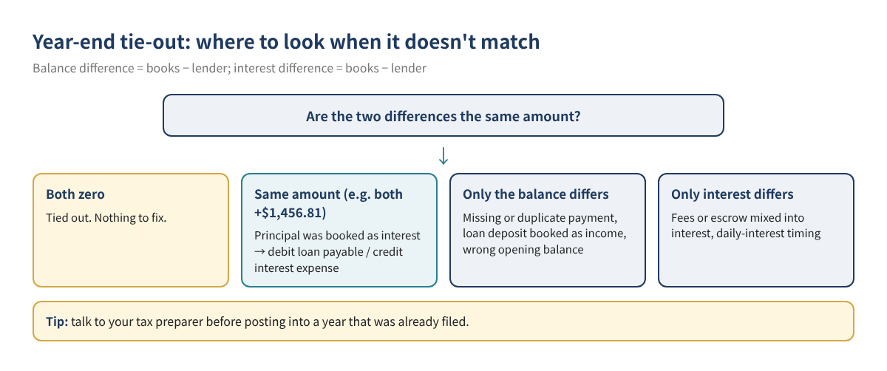

In the books of businesses with an equipment loan, vehicle loan or term loan, the most common mistake is booking the entire monthly payment to an expense account such as "Interest" or "Loan payment." That overstates expenses, and the loan on the balance sheet never drops below the amount originally borrowed. When the lender's year-end statement arrives, that is usually why the books are off by thousands of dollars.
This post covers how a payment splits into principal and interest, how to calculate the split yourself in a spreadsheet, how to record it as two lines in QuickBooks Online and Desktop, and how to tie the loan out to the lender at year-end, with sample numbers throughout.
Who this is for: owners who record business loan payments each month, anyone whose loan balance doesn't match the lender, and anyone cleaning up loan accounts before closing the year.
A typical installment payment mixes interest (the cost of borrowing for the period, an expense) and principal (the part that reduces what you owe, recorded against the loan liability). Early payments are mostly interest; later ones are mostly principal.

No schedule from the lender? Excel or Google Sheets can do it. Each month: interest = prior balance × annual rate ÷ 12; principal = payment − interest; new balance = prior balance − principal.
| Cell | What | Formula (sample) |
|---|---|---|
| B1 | Loan amount | 35000 |
| B2 | Annual rate | 0.075 |
| B3 | Number of monthly payments | 60 |
| B4 | Monthly payment | =ROUND(PMT(B2/12,B3,-B1),2) → 701.33 |
| C7 | Interest, payment 1 | =ROUND(B1*$B$2/12,2) → 218.75 |
| D7 | Principal, payment 1 | =$B$4-C7 → 482.58 |
| E7 | Balance after payment 1 | =B1-D7 → 34,517.42 |
From payment 2 on, point the interest formula at the previous row's balance (E7) and copy down. Rounding makes the last payment slightly different ($701.19 in this example).
Watch out: SBA loans and lines of credit often charge interest by the day, so this monthly math will be off by a few dollars. Use the interest figure on the lender's statement when you have it.
Per Intuit's help article "Set up a loan in QuickBooks Online," create the loan account under All apps → Accounting → Chart of accounts → New: Other Current Liabilities (detail type Loan Payable) for a loan paid off within the fiscal year, or Long Term Liabilities (detail type Notes Payable) for a longer one. Menus move around; if you can't find it, search for "Chart of accounts."
Per Intuit's "Manually track loans in QuickBooks Desktop," use Banking → Write Checks: on the Expenses tab, line 1 is the loan liability account with the principal, line 2 is the interest expense account with the interest. The same help notes that Loan Manager was discontinued in QuickBooks Desktop 2022 and works only in earlier supported versions, so on current versions you split the payment yourself.
A fictional business borrows $35,000 for equipment in January 2026 (7.5%, 60 months) and pays $701.33 a month starting February 1. All figures are sample values.
| # | Date | Payment | Interest (expense) | Principal (liability) | Balance after |
|---|---|---|---|---|---|
| 1 | 02/01/2026 | $701.33 | $218.75 | $482.58 | $34,517.42 |
| 2 | 03/01/2026 | $701.33 | $215.73 | $485.60 | $34,031.82 |
| 3 | 04/01/2026 | $701.33 | $212.70 | $488.63 | $33,543.19 |
| … | … | … | … | … | … |
| 11 (Dec) | 12/01/2026 | $701.33 | — | — | $29,522.59 |
| 2026 total | $7,714.63 | $2,237.22 | $5,477.41 |

| Example: 3 payments booked fully as interest | Lender | QuickBooks | Difference |
|---|---|---|---|
| Principal balance, Dec 31 | $29,522.59 | $30,979.40 | $1,456.81 |
| Interest for 2026 | $2,237.22 | $3,694.03 | $1,456.81 |
| Account (Dec 31 adjusting entry) | Debit | Credit |
|---|---|---|
| Loan payable | $1,456.81 | |
| Interest expense | $1,456.81 |

Record a deposit into the bank account and assign it to the loan liability account, not to income.
Use the spreadsheet formulas above. For daily-interest loans, the statement's interest figure is more accurate.
The simplest fix is to compare the lender's principal balance with your books at year-end and post one adjusting entry for the difference. If that year was already filed, check with your tax preparer first.
This post is about bookkeeping. Whether and how much interest is deductible depends on how the loan was used and your situation, so confirm with your tax preparer. For vehicle loans, see our car loan interest post.
You can download the ready-made Business Loan Payment Splitter & Year-End Balance Tie-Out for free in the Free kit download box below (Excel + PDF guide, no sign-up).
This article is general educational information, not tax, legal or financial advice. No particular result is guaranteed, and your lender's statements are the final word. QuickBooks screens and menu names change often; check your current screens and Intuit's latest guidance.
QuickBooks is a registered trademark of Intuit Inc.; not affiliated with or endorsed by Intuit.